Duplicate & Inconsistent Data in Pandas
Clean real-world data like a professional: master exact duplicate row detection with duplicated(), distinguish repeated business keys from ghost imports, prune safely with drop_duplicates(), standardize messy strings using .str.strip() and .str.lower(), implement canonical category mappings with replace(), and parse mixed dates and currencies with precision.
1. Introduction: Why Clean Dirty Data?
Topic 9 mein humne dekha tha ki real-world datasets mein missing values (NaN, None, NaT) kitne common hote hain. Lekin missing data data-cleaning ka sirf aadha hissa hai! Dusra aur equally dangerous hissa hai: Duplicate Records aur Inconsistent Values.
Imagine kijiye ek college examination office ka registrar room:
-
Ek student, Aman Sharma (ID:
101), ka admission form database mein do baar insert ho gaya kyunki admission portal par usne "Submit" button par double-click kar diya tha. -
Dusre records mein alag-alag staff members ne departments enter kiye: kisi clerk ne likha
"CSE", kisi ne"cse", aur kisi ne"Computer Science". -
City column mein kisi ne likha
"Lucknow", kisi ne aage peeche space dekar" Lucknow ", aur kisi ne Caps Lock on karke"LUCKNOW"likh diya!
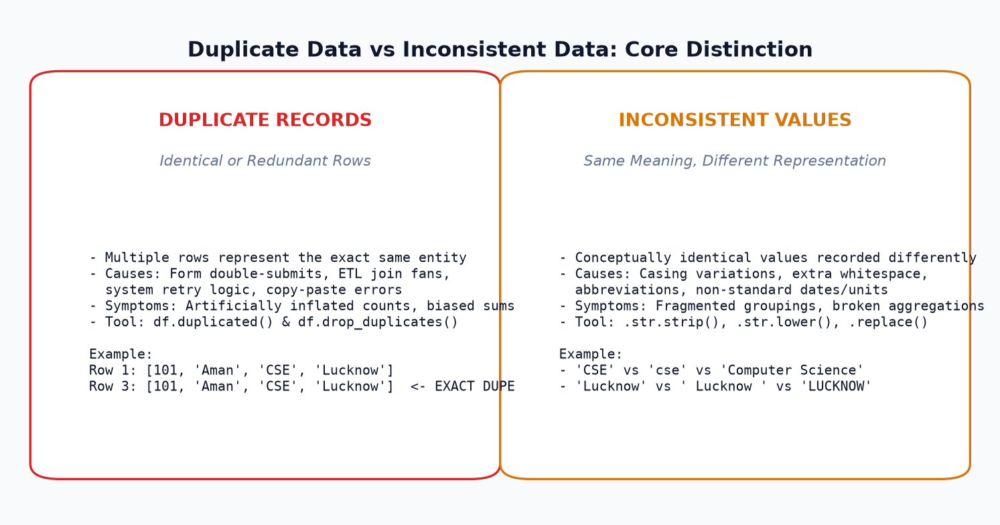
Raw Ingested Dataset Example
Neeche diye gaye table ko dhyan se dekhiye. Yeh exact scenario hai jo hume raw file load karne par milta hai:
| Student ID | Student Name | Department | City | Diagnosis / Data Issue |
|---|---|---|---|---|
101 |
Aman Sharma | CSE |
Lucknow | Valid Original Record |
102 |
Priya Patel | IT |
Kanpur | Valid Original Record |
101 |
Aman Sharma | CSE |
Lucknow | EXACT DUPLICATE of Row 1! |
103 |
Rahul Verma | cse |
Lucknow | Inconsistent Casing & Whitespace |
104 |
Neha Singh | Computer Science |
LUCKNOW | Category Alias & Uppercase City |
Beginners aksar pehli galti yeh karte hain ki table mein koi bhi repeat ya strange value dekhte hi poori row delete kar dete hain. Data Cleaning ka matlab data delete karna nahi hota! Agar aapne Neha Singh ki row delete kar di kyunki department "Computer Science" likha tha, toh aapne ek legitimate student ka admission record permanently delete kar diya. Proper cleaning ka matlab hai values ko standardize aur harmonize karna.
Why Data Quality Affects Business, Analytics & Machine Learning
Dirty data ko clean na karne ke direct business aur statistical consequences hote hain:
- Double-Counting & Financial Misreporting: Agar e-commerce mein orders duplicate hain, toh aapki monthly revenue artificially inflated dikhegi aur accounting reports audit mein fail ho jayengi.
-
Fragmented Groupings (Split-Brain Aggregations): Jab aap
df.groupby('department').count()karenge, toh PandasCSE,cse, aurComputer Scienceko 3 alag-alag groups banayega! Registrar ko lagega ki department mein sirf 1-1 student hai jabki actual mein 3 students the! -
Machine Learning Model Degradation: Categorical encoders (One-Hot Encoding, Label Encoding)
CSEaurcseko do alag features bana denge, jisse feature space explode hoga aur model overfit karega. - Customer Confusion & Double Billing: Duplicate customer IDs ki wajah se ek hi client ko multiple bills, notification emails, ya duplicate parcels dispatch ho sakte hain.
2. Detecting Duplicate Records with duplicated()
Pandas mein duplicate rows detect karne ke liye primary method hai DataFrame.duplicated(). Yeh method dataset ki har ek row ko scan karta hai aur ek Boolean Series (True / False) return karta hai.
Default behavior mein (keep='first'):
- Row jab pehli baar aati hai, toh Pandas use
Falsemark karta hai (kyunki woh first occurrence hai, duplicate nahi). - Wahi exact row agar aage dobara repeat hoti hai, toh use
Truemark kiya jata hai (Duplicate detected!).
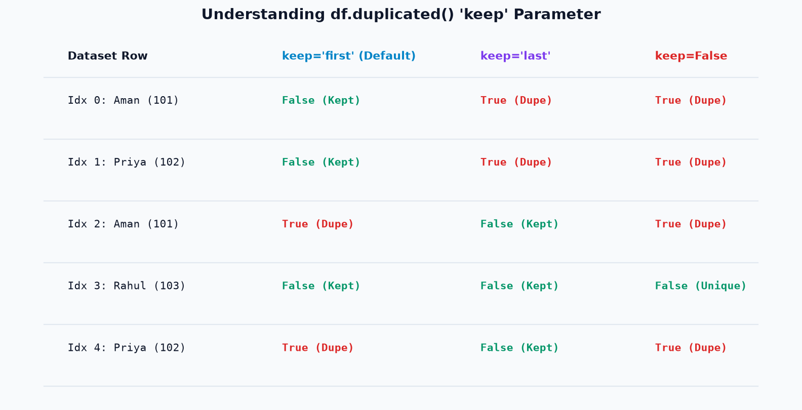
The Three 'keep' Parameter Options
| Option | Python Syntax | Behavior | When to Use in Production |
|---|---|---|---|
| keep='first' (Default) |
df.duplicated(keep='first') |
Pehli occurrence ko False rakhta hai, subsequent repetitions ko True mark karta hai. |
Standard deduplication jab chronological order mein pehla record trustworthy ho. |
| keep='last' | df.duplicated(keep='last') |
Aakhiri occurrence ko False rakhta hai, pehle ke records ko True mark karta hai. |
Jab recent / updated records file ke end mein append hote hain aur latest entry chahiye ho. |
| keep=False | df.duplicated(keep=False) |
Har ek duplicate instance (first and subsequent sabhi) ko True mark kar deta hai. |
Auditing: Jab duplicate records ka poora jhund (all occurrences) inspect karna ho. |
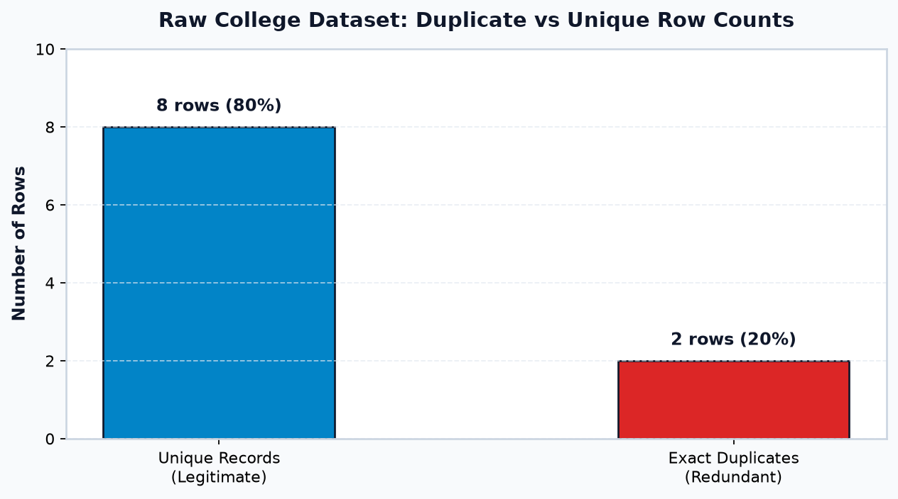
Example 1: Detecting Exact Duplicates in College Student Records
Dekhiye kaise duplicated() aur duplicated().sum() kaam karte hain:
import pandas as pd # Raw student cohort dataset df = pd.DataFrame({ "student_id": [101, 102, 101, 103, 102], "name": ["Aman", "Priya", "Aman", "Rahul", "Priya"], "marks": [85, 92, 85, 76, 92] }) # 1. Default detection (keep='first') dupes_default = df.duplicated() print("--- 1. Default Detection (keep='first') ---") print(dupes_default) print("Total Duplicate Rows:", dupes_default.sum()) # 2. Complete inspection (keep=False) print(" --- 2. Inspecting All Duplicate Instances (keep=False) ---") all_dupes_view = df[df.duplicated(keep=False)] print(all_dupes_view)
Output Explanation:
- Row 0 (Aman, 101) pehli baar aaya, toh
Falseraha. Row 2 wahi same data hai, isliyeTruemark hua. - Row 1 (Priya, 102) pehli baar
Falseraha, Row 4 par wahi entry repeat hui tohTruemark hua. - Jab humne
keep=Falsekiya, toh Row 0, 1, 2, 4 chaaro rows select ho gayi! Isse analyst ko dono pairs compare karne mein aasaani hoti hai.
Example 2: Identifying Duplicates in E-Commerce Orders
E-commerce transactions mein multiple customers orders place karte hain. Yahan dekhiye ki duplicate detection kaise kaam karta hai:
import pandas as pd df_orders = pd.DataFrame({ "order_id": ["ORD-1", "ORD-2", "ORD-1", "ORD-3"], "customer": ["Rohan", "Simran", "Rohan", "Karan"], "amount": [500.0, 1200.0, 500.0, 350.0] }) is_dupe = df_orders.duplicated() print("Orders DataFrame:") print(df_orders) print(" Exact Duplicate Orders Count:", is_dupe.sum()) print("Duplicate Record Details:") print(df_orders[is_dupe])
3. Exact Duplicates vs. Repeated Business Keys
Yeh data science ka sabse critical distinction hai jahan 90% junior analysts glti karte hain:
- Exact Duplicate Row: Jab table ki har ek column value (ID, Name, Date, Marks, Price) doosri row ke bilkul identical hoti hai.
- Repeated Business Key: Jab sirf ek identifying column (jaise
student_idyaorder_id) match karta hai, lekin doosri columns mein values alag hoti hain!
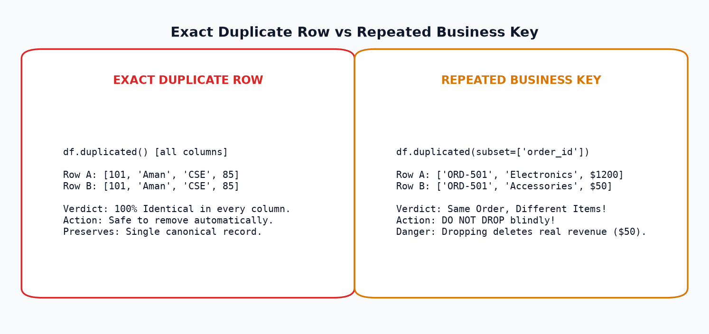
Agar aap likhte hain df.duplicated(subset=['order_id']), toh Pandas sirf order_id check karega. Agar kisi customer ne ek hi order mein 2 items kharidi hain (Item 1: Mobile Phone, Item 2: Back Cover), toh dono rows ka order_id identical hoga. Agar aapne subset par duplicate mark karke delete kar diya, toh back cover ka real record delete ho jayega aur company ka ₹500 revenue gayab ho jayega!
Example 1: Demonstrating the Subset Difference in Student Re-evaluations
Suppose Aman ne re-evaluation ka form bhara aur uske marks 85 se badhkar 95 ho gaye:
import pandas as pd df_reeval = pd.DataFrame({ "student_id": [101, 102, 101], "name": ["Aman", "Priya", "Aman"], "marks": [85, 92, 95] # Row 2 marks updated to 95! }) print("All Columns Duplicated:", df_reeval.duplicated().sum()) print("Subset=['student_id'] Duplicated:", df_reeval.duplicated(subset=["student_id"]).sum())
Key Insight: Poori row duplicate nahi hai (Marks: 85 vs 95). Isliye agar aap df.drop_duplicates() run karenge toh 0 rows delete hongi. Lekin agar aap subset=['student_id'] denge toh Row 2 delete ho jayegi aur student ka updated score 95 destroy ho jayega!
Example 2: Multi-Item Orders in E-Commerce
Dekhiye ki real e-commerce systems mein ek single order ID multiple legitimate rows kaise contain karta hai:
import pandas as pd df_cart = pd.DataFrame({ "order_id": ["ORD-501", "ORD-501", "ORD-502"], "item": ["Laptop", "Wireless Mouse", "Keyboard"], "price": [65000, 1200, 2500] }) print("Cart DataFrame:") print(df_cart) print(" Exact Row Duplicates:", df_cart.duplicated().sum()) print("Repeated Order IDs:", df_cart.duplicated(subset=["order_id"]).sum())
4. Removing Duplicate Records Safely with drop_duplicates()
Duplicate rows detect hone ke baad unhe safely remove karne ke liye DataFrame.drop_duplicates() use kiya jata hai. Lekin production pipelines mein kabhi bhi df.drop_duplicates(inplace=True) aankh band karke nahi chalaya jata!
The Standard 5-Step Defensive Deduplication Workflow
- Preserve Raw Data: Pehle
original_df = df.copy()banayein taaki raw data intact rahe. - Calculate Initial Count:
len(original_df)record karein. - Apply Deduplication: Cleaned DataFrame ko naye variable mein assign karein:
cleaned_df = df.drop_duplicates(). - Audit the Delta: Confirm karein ki kitni rows remove hui:
len(original_df) - len(cleaned_df). - Assert Zero Remaining Duplicates: Automated assertion check run karein:
assert cleaned_df.duplicated().sum() == 0.
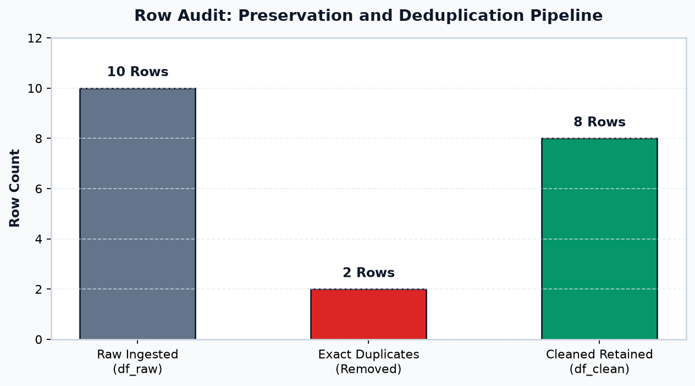
Example 1: Safe Deduplication on Student Records
import pandas as pd raw_data = { "student_id": [101, 102, 101, 103, 102], "name": ["Aman", "Priya", "Aman", "Rahul", "Priya"], "marks": [85, 92, 85, 76, 92] } df = pd.DataFrame(raw_data) # Defensive Workflow original_df = df.copy() cleaned_df = df.drop_duplicates(keep="first").reset_index(drop=True) print("Original Ingested Rows:", len(original_df)) print("Cleaned Dataset Rows:", len(cleaned_df)) print("Exact Duplicates Pruned:", len(original_df) - len(cleaned_df)) print("Remaining Duplicates Check:", cleaned_df.duplicated().sum()) print(" Final Cleaned Table:") print(cleaned_df)
Example 2: Removing Ghost Order Imports in E-Commerce
Agar server sync glitch ki wajah se transaction log mein wahi identical line dobara append ho gayi ho:
import pandas as pd transactions = pd.DataFrame({ "tx_id": ["TX-901", "TX-902", "TX-901"], "user": ["vikram", "neha", "vikram"], "amt": [1500, 2400, 1500] }) tx_clean = transactions.drop_duplicates().reset_index(drop=True) print("Ghost Duplicates Removed:", len(transactions) - len(tx_clean)) print(tx_clean)
5. Detecting Inconsistent Text Values
Duplicate rows remove karne ke baad bhi data completely clean nahi hota! Asal challenge text values ke inconsistent formatting se shuru hota hai.
The 7 Real-World Text Disparities
- Leading / Trailing Whitespace:
" Lucknow "vs"Lucknow". Python ke liye yeh dono completely different strings hain! - Casing Inconsistencies:
"CSE"vs"cse"vs"Cse". - Name Capitalization:
"Aman Sharma"vs"aman sharma"vs"AMAN SHARMA". - Abbreviations & Synonyms:
"CSE"vs"Computer Science"vs"Comp Sci". - Punctuation & Separators:
"Tech-Support"vs"Tech Support"vs"Tech_Support". - Empty Strings vs Missing Nulls:
""(length 0 string) vsnp.nan. Empty string ko Pandas valid string maanta hai, missing nahi! - Mixed Types in Single Column: Ek hi column mein integer
101aur string"101"ka mix hona.
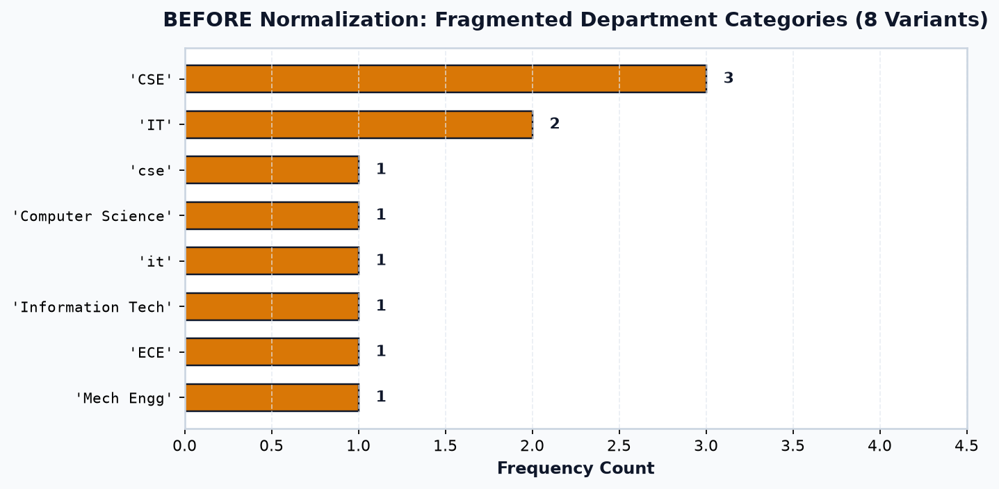
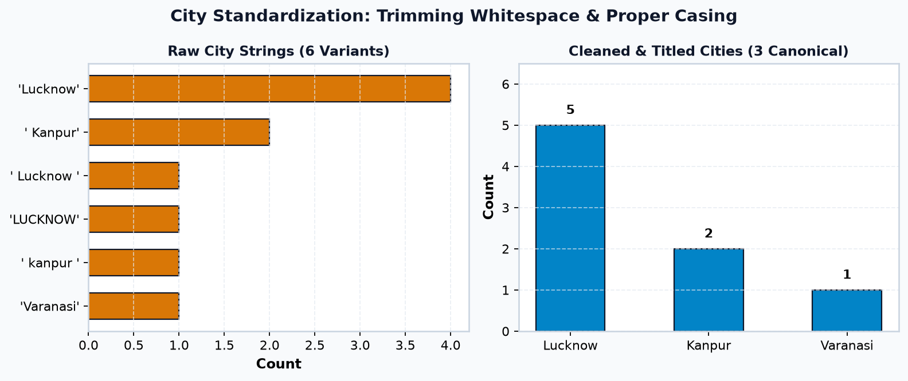
Audit Tools: value_counts(), unique(), and nunique()
Text columns ko inspect karne ke liye sabse pehle .unique() aur .value_counts(dropna=False) run kijiye:
import pandas as pd s_dept = pd.Series(["CSE", " cse ", "Computer Science", "IT", "it", "IT", "ECE"]) print("Distinct Unique Values Count:", s_dept.nunique()) print("Unique Values Array:", s_dept.unique()) print(" Raw Frequency Distribution:") print(s_dept.value_counts())
Observation: Yahan sirf 3 departments hone chahiye the (CSE, IT, ECE), lekin Pandas ko 6 distinct categories dikh rahi hain kyunki " cse " mein leading/trailing spaces hain aur "it" lowercase hai!
6. Normalizing Strings with .str Accessors
Pandas Series ke paas ek powerful built-in namespace hota hai: .str. Is accessor ki madad se aap poore column ke text par vectorised string operations perform kar sakte hain bina slow Python for loops likhe.
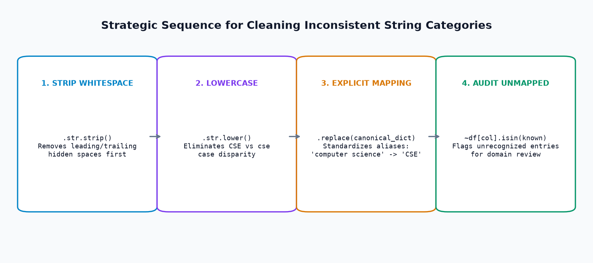
Essential .str Methods Cheat Sheet
| Method | Functionality | Input Example | Output Result |
|---|---|---|---|
.str.strip() |
Leading aur trailing whitespace remove karta hai | " Lucknow " |
"Lucknow" |
.str.lower() |
Sabhi characters ko lowercase banata hai (Case-insensitive comparison) | "CSE" |
"cse" |
.str.upper() |
Sabhi characters ko uppercase banata hai | "it" |
"IT" |
.str.title() |
Har word ka pehla letter capital karta hai (Personal names, Cities) | "aman sharma" |
"Aman Sharma" |
.str.replace(pat, repl) |
Specific characters ya regex patterns replace karta hai | "$1,200.00" |
"1200.00" |
Beginners aksar sochte hain ki .str.title() har text ko clean kar dega. Lekin acronyms aur abbreviations ke case mein:
pd.Series(["CSE", "IT", "AI", "ML"]).str.title()
Output ban jayega: ["Cse", "It", "Ai", "Ml"]! Isne official department abbreviations ko corrupt kar diya! Rule: .str.title() sirf personal names aur city/state names ke liye use karein, technical abbreviations ke liye nahi.
Example 1: Safe String Normalization on City & Department Columns
import pandas as pd df_dirty = pd.DataFrame({ "city": [" Lucknow ", "lucknow", "LUCKNOW", " kanpur ", "Kanpur"], "dept": [" CSE ", "cse", "IT", " it ", "ECE"] }) # 1. Cities: Strip whitespace and apply title-case df_dirty["city_clean"] = df_dirty["city"].str.strip().str.title() # 2. Departments: Strip whitespace and convert to lowercase for matching df_dirty["dept_clean"] = df_dirty["dept"].str.strip().str.upper() print("Original Cities Count:", df_dirty["city"].nunique()) print("Cleaned Cities Count:", df_dirty["city_clean"].nunique()) print("\nNormalized DataFrame:") print(df_dirty[["city_clean", "dept_clean"]])
Example 2: Cleaning E-Commerce Product Categories
E-commerce catalog mein seller inputs alag-alag casing mein aate hain:
import pandas as pd cats = pd.Series([" Electronics ", "electronics", "ELECTRONICS", " Footwear", "FOOTWEAR"]) cats_clean = cats.str.strip().str.title() print("Raw Categories unique count:", cats.nunique()) print("Cleaned Categories unique count:", cats_clean.nunique()) print("Value Counts:") print(cats_clean.value_counts())
7. Standardizing Categories with Explicit Mappings
Sirf whitespace strip aur lowercase karne se saari problems solve nahi hoti. Kya "Computer Science" apne aap "CSE" ban jayega? Nahi! Python ko nahi pata ki Computer Science aur CSE same cheez hain. Iske liye hume Explicit Domain-Approved Mappings define karni padti hain.
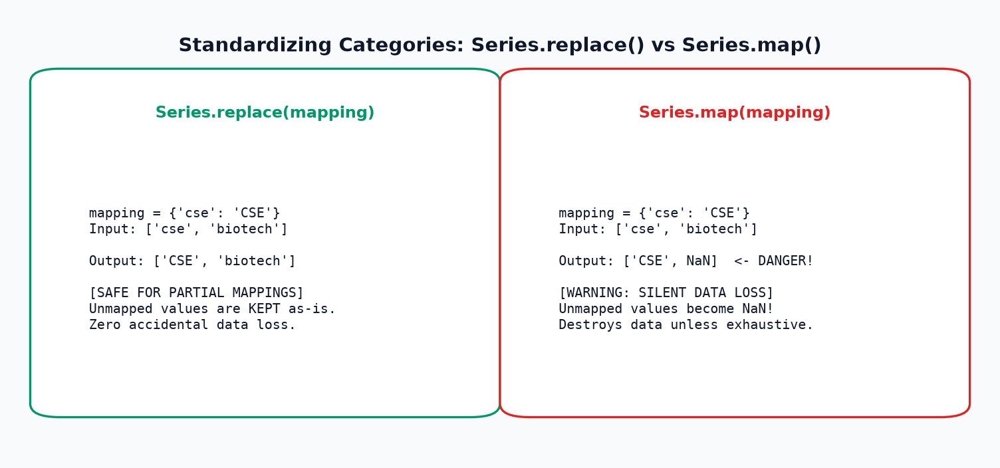
The Crucial Difference: Series.replace() vs. Series.map()
Dono methods dictionary accept karte hain, lekin unka behavior unmapped keys ke sath completely opposite hota hai:
| Method | Syntax | Behavior on Unmapped Keys | Safety Rating |
|---|---|---|---|
| Series.replace() | s.replace(mapping_dict) |
Jo keys dictionary mein nahi milti, unhe as-is preserve rakhta hai. | Safe (Recommended) |
| Series.map() | s.map(mapping_dict) |
Jo keys dictionary mein nahi milti, unhe silently NaN bana deta hai! | Dangerous unless exhaustive! |
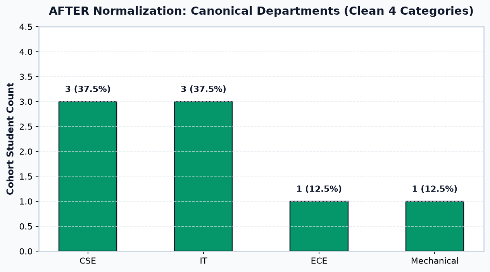
Example 1: Standardizing College Departments with Unmapped Audit
import pandas as pd dept_raw = pd.Series([ "cse", "computer science", "it", "information technology", "ece", "biotech" ]) # 1. Define explicit canonical domain dictionary dept_mapping = { "cse": "CSE", "computer science": "CSE", "it": "IT", "information technology": "IT", "ece": "ECE" } # 2. Standardize using .replace() dept_clean = dept_raw.replace(dept_mapping) # 3. Audit unmapped values (values not in our target canonical list) target_departments = set(dept_mapping.values()) unmapped_mask = ~dept_clean.isin(target_departments) unmapped_items = dept_clean[unmapped_mask] print("Cleaned Department Series:") print(dept_clean) print("\nUnmapped Categories Flagged for Human Review:") print(unmapped_items)
Why this is defensive engineering: "biotech" dictionary mein nahi tha. .replace() ne use silently delete nahi kiya aur na hi NaN banaya. Usne use "biotech" rakha, aur audit step ne turant flag kar diya ki registrar se confirm karein ki kya Biotech department naya open hua hai!
Example 2: Normalizing E-Commerce Product Taxonomies
E-commerce platforms par hazaro sellers alag-alag product types enter karte hain jinhe standard taxonomy mein map karna hota hai:
import pandas as pd seller_cats = pd.Series(["sneakers", "running shoes", "smartphones", "laptops", "novel"]) taxonomy_map = { "sneakers": "Footwear", "running shoes": "Footwear", "smartphones": "Electronics", "laptops": "Electronics", "novel": "Books & Media" } canonical_cats = seller_cats.replace(taxonomy_map) print("Standardized Enterprise Taxonomy:") print(canonical_cats.value_counts())
8. Handling Inconsistent Date Formats
Dates data engineering ki sabse notorious problem hoti hain. Ek hi file ke andar admission dates ISO format (2026-01-10), European slash format (12/01/2026), aur text typos ("NOT_A_DATE") mein mixed milti hain.
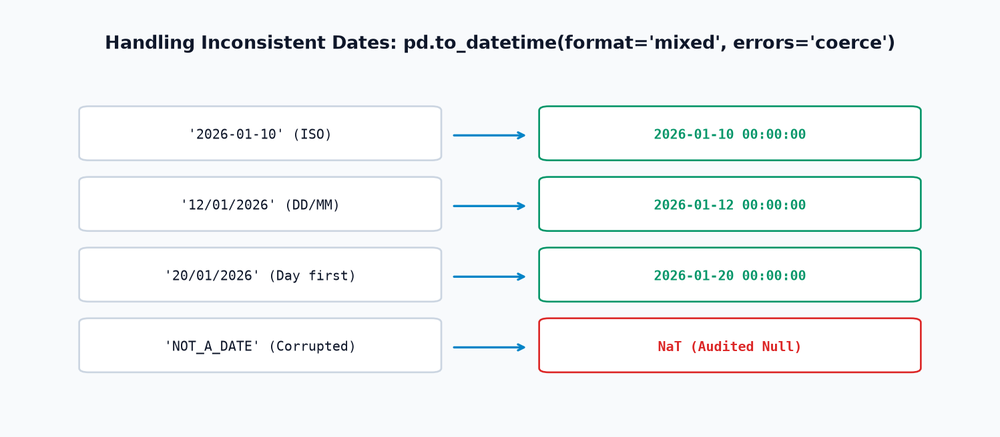
pd.to_datetime() with errors='coerce'
Jab dates mixed formats mein hon, toh pd.to_datetime() ke do parameters essential hote hain:
format='mixed': Pandas 2.0+ ka feature jo dataset ke har row ka format independently infer karta hai.errors='coerce': Agar koi string valid date mein parse nahi ho sakti (jaise"Pending"ya"2026-99-99"), toh code crash karne ke bajaye useNaT(Not-a-Time) bana deta hai.
Kya "03/04/2026" ka matlab 4 March 2026 hai (US: MM/DD/YYYY) ya 3 April 2026 (UK/India: DD/MM/YYYY)? Bina domain owner se confirm kiye kabhi assumption mat lijiye! Agar aapko pata hai ki dataset Indian / European format mein hai, toh hamesha dayfirst=True pass kijiye.
Example 1: Parsing Mixed Dates with Coerced Null Auditing
import pandas as pd dates_raw = pd.Series([ "2026-01-10", "12/01/2026", "20/01/2026", "NOT_A_DATE", "2026-01-25" ]) # Safe Parsing with mixed format and error coercion dates_parsed = pd.to_datetime(dates_raw, format="mixed", dayfirst=True, errors="coerce") # Auditing failed date conversions failed_dates = dates_raw[dates_parsed.isna()] print("Cleaned Datetime Series:") print(dates_parsed) print("\nFailed / Corrupted Date Strings Audited:") print(failed_dates)
Example 2: Extracting Year, Month, and Day After Standardization
Jab dates datetime64 mein convert ho jaati hain, tab aap standard .dt accessors se components extract kar sakte hain:
import pandas as pd valid_dates = dates_parsed.dropna() df_calendar = pd.DataFrame({ "clean_date": valid_dates, "admission_year": valid_dates.dt.year, "admission_month": valid_dates.dt.month_name(), "day_of_week": valid_dates.dt.day_name() }) print(df_calendar)
9. Cleaning Numeric Values Stored as Text
Real-world datasets mein numbers aksar text strings ban kar aate hain. Kyun?
- Currency symbols lage hote hain:
"$1,200.00"ya"₹ 450". - Thousands separator comma hota hai:
"1,500.50". - Placeholders likhe hote hain:
"FREE","ABSENT","N/A", ya"-".
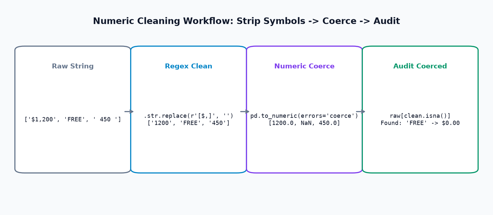
Coerce -> Audit">The 3-Step Numeric Recovery Architecture
- Regex Clean Formatting Symbols:
.str.replace(r'[\$,]', '', regex=True).str.strip()se symbols hatayein. - Coerce via pd.to_numeric():
pd.to_numeric(..., errors='coerce')use karein taaki text placeholders (jaise"FREE") crash na karein balkiNaNban jayein. - Audit & Handle Coerced Nulls: Check karein ki kaunsi values
NaNbani. Agar"FREE"tha, toh use0.00fill karein. Agar"ABSENT"tha, toh boolean flagis_absent = Trueset karein!
Example 1: Cleaning Exam Marks with "ABSENT" Flagging
import pandas as pd marks_raw = pd.Series([85, 92, "ABSENT", 76, " 90 "]) # Step 1: Flag the absent students before numeric conversion is_absent_flag = marks_raw.astype(str).str.strip().str.upper() == "ABSENT" # Step 2: Coerce to numeric float marks_numeric = pd.to_numeric(marks_raw, errors="coerce") df_marks_audit = pd.DataFrame({ "raw_input": marks_raw, "clean_score": marks_numeric, "was_absent": is_absent_flag }) print(df_marks_audit) print("\nAverage Marks (excluding absent):", marks_numeric.mean())
Example 2: Cleaning E-Commerce Prices with Currency Symbols and "FREE" Items
import pandas as pd raw_prices = pd.Series(["$1,200.00", " 450 ", "$1,500.50", "FREE", "$3,000"]) # 1. Regex strip '$' and ',' stripped = raw_prices.str.replace(r"[\$,]", "", regex=True).str.strip() # 2. Coerce numeric numeric_prices = pd.to_numeric(stripped, errors="coerce") # 3. Handle 'FREE' promotional items as 0.00 final_prices = numeric_prices.fillna(0.0) print("Cleaned Prices Series:") print(final_prices) print("Total Inventory Value: ₹", final_prices.sum())
10. 12-Stage Data Cleaning Pipeline Architecture
Real-world enterprise data engineering mein cleaning ka kaam ad-hoc one-liners se nahi hota. Ek structured, auditable, aur repeatable pipeline follow ki jaati hai.
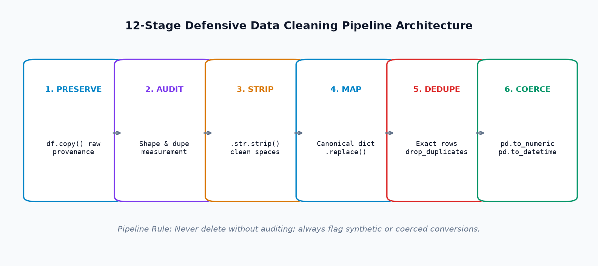
The 12 Defensive Pipeline Stages
- Preserve Raw Data:
df_raw = df.copy()banayein. Original ingested state ko kabhi overwrite mat kijiye. - Audit Dimensions & Nulls:
len(df),df.shape, aur initialisna().sum()note karein. - Audit Duplicate Rows:
df.duplicated().sum()count karein aur duplicate pairs inspect karein. - Inspect Categorical Fields: String columns par
.value_counts(dropna=False)aur.unique()chalayein. - Trim Whitespace: Sabhi text features par
.str.strip()apply karein. - Normalize Casing: Categorical comparisons ke liye lowercase ya standard uppercase set karein.
- Apply Canonical Mappings:
Series.replace(mapping_dict)se domain-approved categories harmonize karein. - Flag Unmapped Categories: Jo values dictionary se bahar hain unhe audit list mein collect karein.
- Deduplicate Exact Rows:
df.drop_duplicates(keep='first')execute karein aur row reduction delta verify karein. - Parse Inconsistent Dates:
pd.to_datetime(format='mixed', errors='coerce')se standardized timestamps banayein. - Clean & Coerce Numbers: Currency symbols strip karein aur
pd.to_numeric()se float/int convert karein. - Final Verification & Assertions: Check karein
assert df_clean.duplicated().sum() == 0aur provenance log export karein.
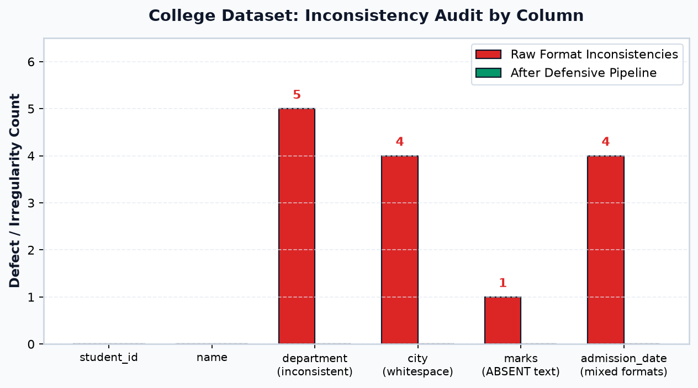
11. Real-World Case Study A: College Student Data Cleaner
Aaiye University Examination Cell ke ek complete messy dataset ko end-to-end clean karein. Dataset mein 10 records hain jisme exact duplicate rows, mixed departments, whitespace issues, text marks, aur multi-format admission dates hain.
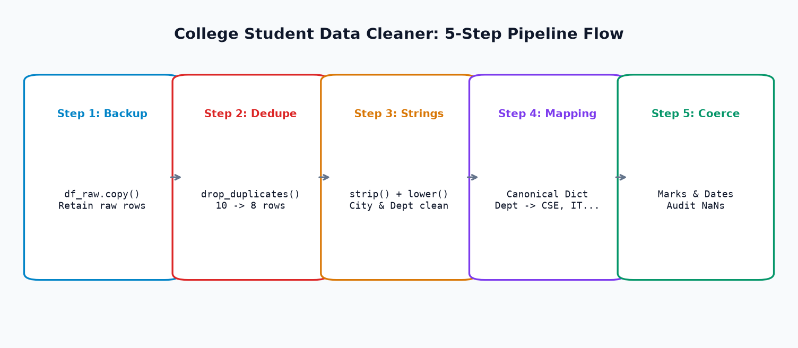
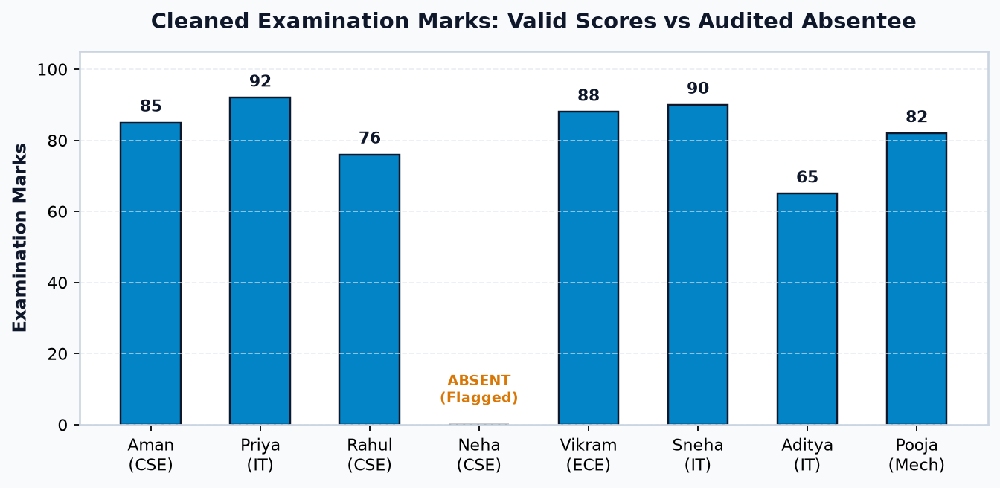
Complete Executable Pipeline Code
import pandas as pd import numpy as np # ============================================================================== # STAGE 1: INGEST RAW DIRTY STUDENT EXAMINATION DATASET # ============================================================================== raw_data = { "student_id": [101, 102, 101, 103, 104, 105, 106, 107, 101, 108], "name": [ "Aman Sharma", "Priya Patel", "Aman Sharma", "Rahul Verma", "Neha Singh", "Vikram Malhotra", "Sneha Kulkarni", "Aditya Joshi", "Aman Sharma", "Pooja Reddy" ], "department": [ "CSE", "IT", "CSE", "cse", "Computer Science", "ECE", "it", "Information Tech", "CSE", "Mech Engg" ], "city": [ "Lucknow", "Kanpur", "Lucknow", " Lucknow ", "LUCKNOW", "Kanpur", " kanpur ", "Lucknow", "Lucknow", "Varanasi" ], "marks": [85, 92, 85, 76, "ABSENT", 88, 90, 65, 85, 82], "admission_date": [ "2026-01-10", "12/01/2026", "2026-01-10", "2026-01-15", "2026-01-18", "20/01/2026", "2026-01-22", "2026-01-25", "2026-01-10", "2026-01-28" ] } df_raw = pd.DataFrame(raw_data) print("--- Stage 1: Ingested Raw Dataset Dimensions ---") print(f"Shape: {df_raw.shape[0]} rows, {df_raw.shape[1]} columns") print(f"Exact Duplicate Rows Detected: {df_raw.duplicated().sum()}") # ============================================================================== # STAGE 2: DEFENSIVE BACKUP & EXACT DEDUPLICATION # ============================================================================== df_clean = df_raw.copy() df_clean = df_clean.drop_duplicates(keep="first").reset_index(drop=True) print(f"Rows after exact deduplication: {len(df_clean)} (Removed {len(df_raw) - len(df_clean)})") # ============================================================================== # STAGE 3: NORMALIZE CITY (STRIP & PROPER CASING) # ============================================================================== df_clean["city"] = df_clean["city"].astype(str).str.strip().str.title() # ============================================================================== # STAGE 4: STANDARDIZE DEPARTMENT (STRIP, LOWER & CANONICAL MAP) # ============================================================================== dept_clean_map = { "cse": "CSE", "computer science": "CSE", "it": "IT", "information tech": "IT", "ece": "ECE", "mech engg": "Mechanical" } dept_temp = df_clean["department"].astype(str).str.strip().str.lower() df_clean["department"] = dept_temp.replace(dept_clean_map) # ============================================================================== # STAGE 5: COERCE NUMERIC MARKS & PARSE DATES # ============================================================================== df_clean["is_absent"] = df_clean["marks"].astype(str).str.strip().str.upper() == "ABSENT" df_clean["marks"] = pd.to_numeric(df_clean["marks"], errors="coerce") df_clean["admission_date"] = pd.to_datetime( df_clean["admission_date"], format="mixed", dayfirst=True, errors="coerce" ) # ============================================================================== # STAGE 6: FINAL ASSERTIONS & DISPLAY # ============================================================================== assert len(df_clean) == 8, "Expected exactly 8 unique student records" assert df_clean.duplicated().sum() == 0, "Cleaned data must have zero duplicates" assert set(df_clean["department"]) == {"CSE", "IT", "ECE", "Mechanical"} print("\n--- Final Cleaned Student Cohort ---") print(df_clean[["student_id", "name", "department", "city", "marks", "is_absent"]])
12. Real-World Case Study B: E-Commerce Orders Data Cleaner
E-Commerce mein deduplication aur bhi challenging hoti hai kyunki ek single Order ID multiple legitimate rows contain karta hai (Multi-item shopping carts). Agar kisi user ne Phone aur Case order kiya hai, toh dono ka order_id same hoga.
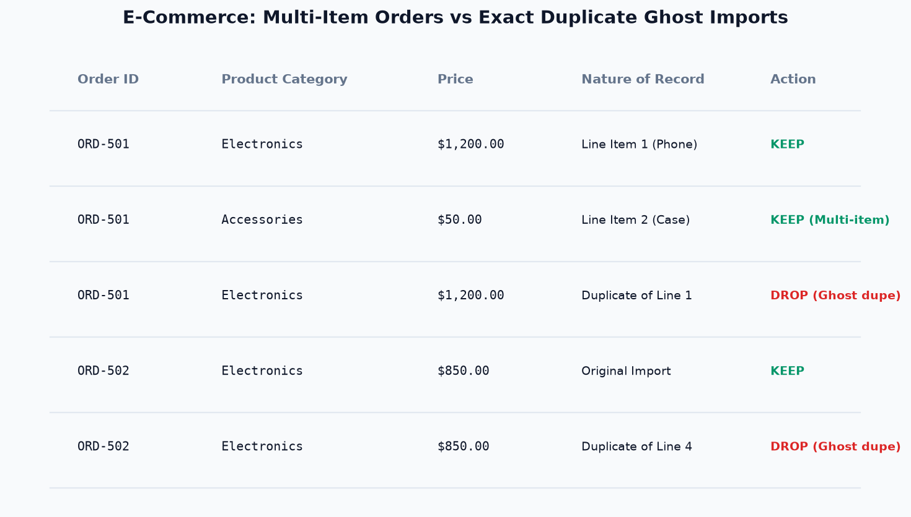
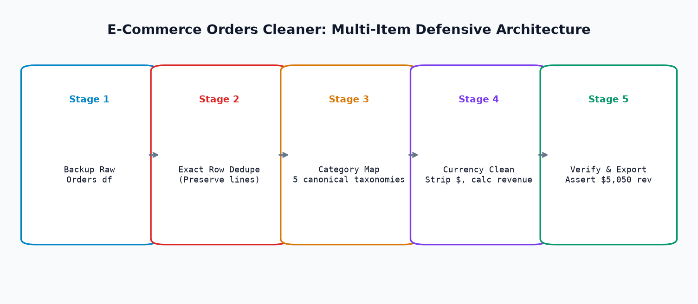
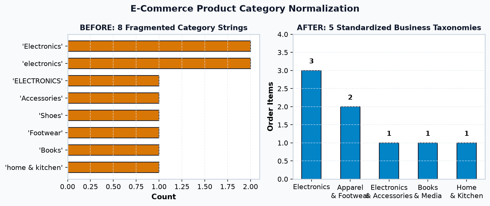
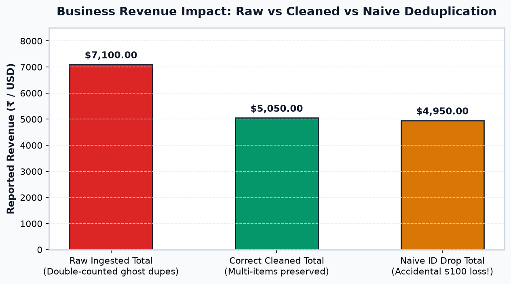
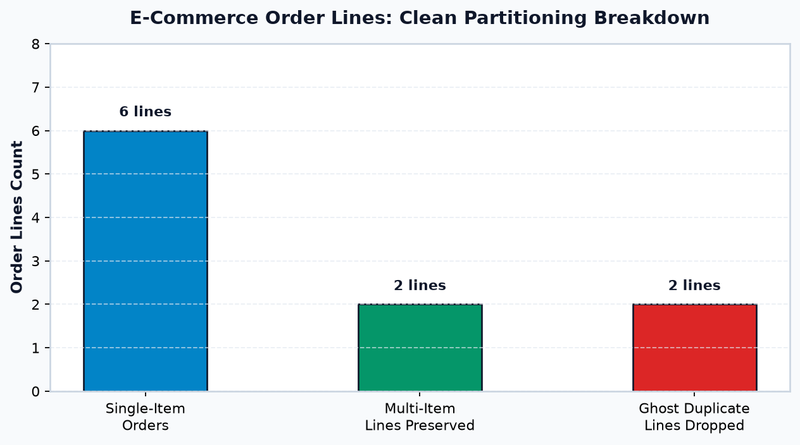
Complete Executable E-Commerce Cleaning Code
import pandas as pd # ============================================================================== # STAGE 1: INGEST RAW TRANSACTIONS LOG # ============================================================================== raw_orders = { "order_id": ["ORD-501", "ORD-501", "ORD-502", "ORD-503", "ORD-501", "ORD-504", "ORD-505", "ORD-506", "ORD-507", "ORD-502"], "customer_name": [ "Aman Verma", "Aman Verma", "Priya Sen", "Rahul Nair", "Aman Verma", "Neha Gupta", "Rohan Mehra", "Vikram Das", "Sneha Rao", "Priya Sen" ], "product_category": [ "Electronics", "Accessories", "electronics", "Footwear", "Electronics", "ELECTRONICS", "Shoes", "Books", "home & kitchen", "electronics" ], "quantity": [1, 2, 1, 1, 1, 1, 2, 3, 1, 1], "price": ["$1,200.00", "$50.00", "850", "$120.00", "$1,200.00", "$2,100.00", "$180.00", "FREE", "$320.00", "850"], "order_date": [ "2026-02-01", "2026-02-01", "02/02/2026", "2026-02-03", "2026-02-01", "2026-02-04", "05-02-2026", "2026-02-06", "2026-02-07", "02/02/2026" ] } df_orders_raw = pd.DataFrame(raw_orders) # ============================================================================== # STAGE 2: PRUNE EXACT DUPLICATE ROWS ONLY (PRESERVE MULTI-ITEM ORDERS!) # ============================================================================== df_orders = df_orders_raw.copy() df_orders = df_orders.drop_duplicates(keep="first").reset_index(drop=True) print(f"Unique Order Lines Preserved: {len(df_orders)} (Pruned {len(df_orders_raw) - len(df_orders)} ghost lines)") # ============================================================================== # STAGE 3: NORMALIZE PRODUCT CATEGORIES # ============================================================================== cat_map = { "electronics": "Electronics", "accessories": "Electronics & Accessories", "footwear": "Apparel & Footwear", "shoes": "Apparel & Footwear", "books": "Books & Media", "home & kitchen": "Home & Kitchen" } cat_norm = df_orders["product_category"].astype(str).str.strip().str.lower() df_orders["product_category"] = cat_norm.replace(cat_map) # ============================================================================== # STAGE 4: CLEAN PRICES & CALCULATE REVENUE # ============================================================================== p_clean = df_orders["price"].astype(str).str.replace(r"[\$,]", "", regex=True).str.strip() df_orders["unit_price"] = pd.to_numeric(p_clean, errors="coerce").fillna(0.0) df_orders["line_total"] = df_orders["quantity"] * df_orders["unit_price"] total_rev = df_orders["line_total"].sum() print(f"Total Verified Revenue: ${total_rev:,.2f}") assert total_rev == 5050.0, "Verified line revenue must equal exactly $5,050.00" print("\n--- Cleaned Orders Table ---") print(df_orders[["order_id", "customer_name", "product_category", "quantity", "unit_price", "line_total"]])
13. Strategic Decision Frameworks: When to Drop vs When to Keep
Har repeated record ek error nahi hota. Senior analysts decision lene ke liye structured flowchart use karte hain:
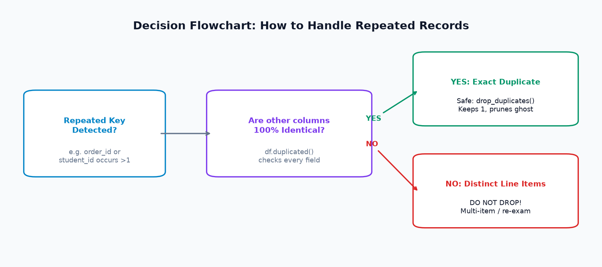
Duplicate Strategy Decision Matrix
| Scenario | Condition | Recommended Action | Pandas Syntax |
|---|---|---|---|
| Exact Row Duplicate | Every column value is 100% identical. | Safe to drop immediately. | df.drop_duplicates(keep='first') |
| Multi-Item Business Key | Same order_id, different items/prices. |
DO NOT DROP! Genuine shopping cart items. | Keep all rows. |
| Entity State Update | Same ID, newer timestamp, updated status/marks. | Sort by timestamp, keep newest. | df.sort_values('date').drop_duplicates('id', keep='last') |
| Conflicting Data Entry | Same ID, conflicting names/marks without timestamp. | Do not guess! Flag for human manual audit. | df[df.duplicated('id', keep=False)] |
14. Top 13 Common Traps & Mistakes to Avoid
Data cleaning mein choti si carelessness bhi million-dollar errors cause kar sakti hai. Yahan 13 critical traps hain jinhe har developer ko avoid karna chahiye:
Trap 1: Using duplicated() without understanding 'keep'
Mistake: Sochna ki duplicated() sabhi copies ko True kar deta hai.
Correction: By default keep='first' pehli occurrence ko False chhodta hai. Sabhi duplicate instances dekhne ke liye keep=False use karein.
Trap 2: Confusing duplicate rows with repeated IDs
Mistake: df.duplicated(subset=['order_id']) run karke multi-item shopping carts ke second items delete kar dena.
Correction: Pehle check karein ki kya table line-item level par hai ya order level par. Exact rows ke liye df.drop_duplicates() bina subset ke chalayein.
Trap 3: Blindly removing all rows sharing an ID
Mistake: Agar Aman ke do records hain aur dono ke marks alag hain, toh bina investigation ke ek ko delete kar dena.
Correction: Re-evaluation ya update timestamps check karein (df.sort_values('date').drop_duplicates('id', keep='last')).
Trap 4: Cleaning strings without .str.strip() first
Mistake: df['dept'] == 'CSE' filter karna jab raw string " CSE " ho.
Correction: Casing match karne se pehle hamesha .str.strip() karein.
Trap 5: Applying .str methods to non-string columns
Mistake: Integer ID column par df['id'].str.strip() chalana -> AttributeError: Can only use .str accessor with string values!
Correction: Pehle type cast karein: df['id'].astype(str).str.strip().
Trap 6: Assuming similar categories are identical without domain approval
Mistake: "IT" aur "CS" ko automatically ek hi category maan lena bina college syllabus check kiye.
Correction: Domain expert se confirmed canonical dictionary banayein.
Trap 7: Using .map() and silently losing unmapped categories
Mistake: df['dept'].map(dict) use karna jab dictionary partial ho -> Unmapped departments NaN ban jaate hain!
Correction: df['dept'].replace(dict) use karein jo unmapped keys ko intact rakhta hai.
Trap 8: Using errors='coerce' without auditing the resulting nulls
Mistake: pd.to_numeric(s, errors='coerce') karke bhool jana ki kaunsi values missing hui.
Correction: Coerced nulls ko audit karein: raw[numeric.isna() & raw.notna()].
Trap 9: Modifying the raw DataFrame without .copy()
Mistake: Ingested data par directly inplace=True lagana. Agar cleaning script mein bug hua toh raw data permanently corrupt ho jata hai.
Correction: Pipeline ke start mein df_raw = df.copy() banayein.
Trap 10: Assuming fewer rows automatically means "better" data
Mistake: 10,000 rows ka dataset 3,000 rows par pahunch gaya aur developer khush ho gaya ki "data clean ho gaya"!
Correction: Aggressive deletion se statistical sample destroy ho jata hai. Hamesha deletion count audit karein.
Trap 11: Using inplace=True in modern pandas pipelines
Mistake: Chained assignments ke saath inplace=True use karna jisse SettingWithCopyWarning trigger hota hai aur pipeline auditable nahi rehti.
Correction: Clean DataFrame return karein: df_clean = df.drop_duplicates().
Trap 12: Inaccurate calculation of removed rows
Mistake: Hardcoded numbers report karna.
Correction: len(original_df) - len(cleaned_df) dynamic calculation karein.
Trap 13: Generating charts that don't match the executed pipeline
Mistake: Report mein theoretical chart lagana jo actual DataFrame ke numbers se match na kare.
Correction: Charts hamesha executed Pandas DataFrames se generate karein.
15. Mini-Project: Clean a College Dataset
Ab aapki baari hai! Niche diye gaye dirty student dataset ko clean karne ke liye starter code aur tasks diye gaye hain.
Project Objectives & Tasks
- Ingest the raw dataset and report initial row count and duplicate row count.
- Create a defensive copy of the raw DataFrame.
- Prune exact duplicate rows and verify row count reduction.
- Normalize student names and cities (strip whitespace and apply title-case).
- Standardize department names using an explicit mapping dictionary.
- Clean marks by coercing to numeric and flagging absent students.
- Parse admission dates into standardized timestamps.
- Assert that remaining duplicate rows equal exactly 0.
- Export cleaned dataset to CSV and perform round-trip validation.
Starter Code
import pandas as pd raw_data = { "student_id": [201, 202, 201, 203, 204], "name": ["aarav sharma", "diya patel", "aarav sharma", "kabir singh", "meera nair"], "dept": ["cse", "IT", "cse", "computer science", "ece"], "city": [" Delhi ", "delhi", " Delhi ", "Mumbai", "mumbai"], "score": [88, "ABSENT", 88, 91, 74] } df = pd.DataFrame(raw_data) # TODO: Implement your 5-stage cleaning pipeline here! # 1. df_clean = df.copy() # 2. df_clean.drop_duplicates() # 3. .str.strip().str.title() for name and city # 4. Canonical mapping for dept # 5. Numeric coercion for score
View Complete Verified Solution Click to Expand
import pandas as pd df_clean = df.copy().drop_duplicates().reset_index(drop=True) df_clean["name"] = df_clean["name"].str.strip().str.title() df_clean["city"] = df_clean["city"].str.strip().str.title() dept_map = {"cse": "CSE", "computer science": "CSE", "it": "IT", "ece": "ECE"} df_clean["dept"] = df_clean["dept"].str.strip().str.lower().replace(dept_map) df_clean["was_absent"] = df_clean["score"].astype(str).str.strip().str.upper() == "ABSENT" df_clean["score"] = pd.to_numeric(df_clean["score"], errors="coerce") print("Cleaned Student Cohort:") print(df_clean)
16. Interactive Practice Section (39 Questions & Challenges)
Apne concepts ko test karne ke liye niche diye gaye cards par click karke questions solve kijiye aur answers verify kijiye:
Part 1: Beginner Questions (Q1 - Q5)
Q1: What does DataFrame.duplicated() return by default? Show Answer
Answer: DataFrame.duplicated() returns a Boolean Series of the same length as the DataFrame, where True represents a duplicate occurrence and False represents the first/unique occurrence.
Q2: What is the default value of the 'keep' parameter in duplicated()? Show Answer
Answer: The default is keep='first', which marks the first occurrence of a row as False and subsequent copies as True.
Q3: How do you count the total number of duplicate rows in a DataFrame? Show Answer
Answer: By chaining the .sum() method: df.duplicated().sum(). Since in Python True == 1 and False == 0, the sum equals the count of duplicates.
Q4: Which string method removes both leading and trailing whitespace? Show Answer
Answer: df['column'].str.strip(). To remove only leading spaces, use .str.lstrip(); for trailing only, use .str.rstrip().
Q5: What happens when you run df.drop_duplicates() without arguments? Show Answer
Answer: It checks all columns across every row and deletes subsequent identical rows, keeping the first occurrence (keep='first'). It returns a new DataFrame without mutating the original.
Part 2: Intermediate Questions (Q6 - Q10)
Q6: What is the difference between keep='first' and keep='last'? Show Answer
Answer: keep='first' retains the earliest row in index order and prunes subsequent rows. keep='last' retains the final occurrence at the bottom of the table and prunes earlier rows.
Q7: When would you pass keep=False to df.duplicated()? Show Answer
Answer: When you want to inspect all copies involved in a duplicate clash. df[df.duplicated(keep=False)] extracts every single duplicate record, allowing side-by-side human audit.
Q8: Why does Series.replace() safer than Series.map() for category normalization? Show Answer
Answer: Because Series.replace(dict) leaves any value not present in the dictionary intact. In contrast, Series.map(dict) converts any unmapped key into NaN, causing silent data destruction.
Q9: Why does df['code'].str.title() corrupt department acronyms? Show Answer
Answer: .title() capitalizes the first letter and forces all remaining letters to lowercase. Therefore, "CSE" becomes "Cse" and "IT" becomes "It".
Q10: What does errors='coerce' do in pd.to_numeric() and pd.to_datetime()? Show Answer
Answer: Instead of throwing a ValueError exception when encountering unparseable strings (like "ABSENT" or "Corrupted_Date"), it safely converts them into NaN (for numeric) or NaT (for dates), allowing downstream auditing.
Part 3: Practical Data-Cleaning Challenges (Q11 - Q13)
Q11: Challenge: Identify multi-item orders in e-commerce transactions Show Answer
Code Solution:
# Filter order_ids that appear more than once multi_item_mask = df.duplicated(subset=["order_id"], keep=False) multi_orders = df[multi_item_mask].sort_values("order_id")
Q12: Challenge: Clean currency string column '$1,200.50' to float Show Answer
Code Solution:
clean_num = pd.to_numeric( df["price"].astype(str).str.replace(r"[\$,]", "", regex=True).str.strip(), errors="coerce" )
Q13: Challenge: Audit unmapped categories in a normalized column Show Answer
Code Solution:
canonical_set = {"CSE", "IT", "ECE"} unmapped_rows = df[~df["department"].isin(canonical_set)] print("Unrecognized departments requiring review:", unmapped_rows["department"].unique())
Part 4: Multiple Choice Questions (Q14 - Q18)
Q14: MCQ: Given df with 3 identical rows, what does df.duplicated().sum() return? Show Answer
Options: A) 0 | B) 1 | C) 2 | D) 3
Correct Answer: C) 2
Explanation: Row 0 is the first occurrence (False). Rows 1 and 2 are duplicate repetitions (True). Hence, True + True = 2.
Q15: MCQ: What happens to unmapped keys when using df['col'].map(mapping_dict)? Show Answer
Options: A) They stay unchanged | B) They become NaN | C) Raises KeyError | D) Empty string
Correct Answer: B) They become NaN
Explanation: .map() treats the mapping dictionary as an exhaustive transformation. Any key not in the dict is replaced with NaN.
Q16: MCQ: What does pd.to_datetime('2026-02-30', errors='coerce') produce? Show Answer
Options: A) ValueError | B) 2026-03-02 | C) NaT | D) None
Correct Answer: C) NaT
Explanation: February 30th is an invalid calendar day. With errors='coerce', Pandas converts invalid dates to pd.NaT without crashing.
Q17: MCQ: Which command safely strips leading and trailing spaces from column 'city'? Show Answer
Options: A) df['city'].strip() | B) df['city'].str.strip() | C) df.strip('city') | D) strip(df['city'])
Correct Answer: B) df['city'].str.strip()
Explanation: Pandas vectorised string methods require the .str accessor namespace.
Q18: MCQ: Why is df.drop_duplicates(inplace=True) discouraged in audit pipelines? Show Answer
Options: A) It mutates raw data and prevents delta logging | B) It runs 10x slower | C) It is deprecated in Pandas 2.0 | D) It only works on Series
Correct Answer: A) It mutates raw data and prevents delta logging
Explanation: Mutating the original DataFrame in place destroys the raw baseline, making it impossible to compute exact deleted row counts or trace data provenance.
Part 5: Debugging Exercises (Q19 - Q20)
Q19: Debug: AttributeError: Can only use .str accessor with string values! Show Answer
Faulty Code:
df = pd.DataFrame({"id": [101, 102, 103]}) df["id_clean"] = df["id"].str.strip() # CRASHES!
Diagnosis: The 'id' column has int64 dtype. The .str accessor is only available for object or string dtypes.
Corrected Code:
df["id_clean"] = df["id"].astype(str).str.strip()
Q20: Debug: Silent Data Loss with .map() Show Answer
Faulty Code:
s = pd.Series(["cse", "it", "biotech"]) s_clean = s.map({"cse": "CSE", "it": "IT"}) # Index 2 'biotech' became NaN silently!
Diagnosis: .map() coerced "biotech" into NaN because it wasn't defined in the dictionary.
Corrected Code:
s_clean = s.replace({"cse": "CSE", "it": "IT"}) # 'biotech' is preserved intact!
Part 6: Extended Conceptual & Production Drills (Q21 - Q39)
Q21: Does df.drop_duplicates() reset the index automatically? Show Answer
Answer: No, it preserves the original index values of the surviving rows (e.g. 0, 1, 3). To get a fresh continuous 0-based index, chain .reset_index(drop=True).
Q22: How can you check if an exact duplicate row exists in a 1-million row DataFrame efficiently? Show Answer
Answer: Use df.duplicated().any(). The .any() method short-circuits as soon as the first duplicate row is encountered, avoiding counting all 1 million rows.
Q23: What is the difference between an empty string "" and np.nan? Show Answer
Answer: An empty string "" is a valid string object of length 0 (s.isna() evaluates to False). np.nan represents a missing floating-point sentinel (s.isna() evaluates to True).
Q24: How do you convert empty strings "" into np.nan in Pandas? Show Answer
Answer: df['col'] = df['col'].replace(r'^\s*$', np.nan, regex=True) or df['col'].replace('', np.nan).
Q25: Can df.drop_duplicates() handle columns with NaN values? Show Answer
Answer: Yes! While in Python np.nan == np.nan is False, Pandas drop_duplicates() treats NaN values at identical column positions as equal duplicates.
Q26: What does dayfirst=True do in pd.to_datetime()? Show Answer
Answer: It instructs Pandas to parse ambiguous dates like 04/05/2026 as 4th May 2026 (DD/MM/YYYY) rather than April 5th (US MM/DD/YYYY).
Q27: How do you find which columns contain duplicate values? Show Answer
Answer: {col: df[col].duplicated().sum() for col in df.columns}
Q28: How do you remove duplicates based on two columns only? Show Answer
Answer: Pass a list of column names to the subset argument: df.drop_duplicates(subset=['first_name', 'last_name']).
Q29: What happens if subset contains a column name that does not exist? Show Answer
Answer: Pandas raises a KeyError stating that the specified column is not in the index or DataFrame.
Q30: Why should you strip whitespace before applying categorical replacement dictionaries? Show Answer
Answer: Because dictionary lookups require exact character matching. " cse " will not match key "cse" unless stripped first.
Q31: What is data provenance in the context of data cleaning? Show Answer
Answer: Data provenance is the auditable historical record showing where data originated, what transformations were applied, which rows were modified, and why decisions were made.
Q32: How can you create a boolean provenance flag when imputing or converting values? Show Answer
Answer: Create a separate flag column before conversion: df['score_was_absent'] = df['score'] == 'ABSENT'.
Q33: How do you perform case-insensitive deduplication on string columns? Show Answer
Answer: Create a temporary normalized lower-cased column: df['temp'] = df['name'].str.strip().str.lower(), deduplicate using subset=['temp'], and then drop the temporary column.
Q34: How does .str.replace() differ in Python built-in str vs Pandas Series.str? Show Answer
Answer: Python built-in str.replace() only replaces literal substrings. Pandas Series.str.replace() treats patterns as regular expressions by default unless regex=False is passed.
Q35: What is the risk of using regex=True in .str.replace() when searching for literal periods or dollar signs? Show Answer
Answer: In regex, . matches any character and $ matches end of string. Unescaped .str.replace('.', '-') will replace every single character in the string!
Q36: How do you extract numeric digits only from an alphanumeric string column? Show Answer
Answer: df['phone'] = df['phone'].astype(str).str.replace(r'\D+', '', regex=True) where \D+ matches all non-digit characters.
Q37: Why does value_counts(dropna=False) provide better auditing than value_counts()? Show Answer
Answer: Standard value_counts() hides missing null values by default. dropna=False explicitly includes NaN counts at the bottom of the frequency table.
Q38: In an e-commerce database, what does an order-to-order_items relational model prevent? Show Answer
Answer: It prevents redundant storage of customer shipping addresses and order dates for every item, eliminating the risk of line-item confusion during deduplication.
Q39: What is the final step in any automated enterprise data cleaning pipeline? Show Answer
Answer: Automated assertions (assert statements), logging the row delta summary, and saving the cleaned output to an auditable target (database or versioned CSV/Parquet).
17. Summary & Topic 11 Preview
Congratulations! Aapne Pandas ke sabse critical practical skill — Duplicate & Inconsistent Data Cleaning — ko completely master kar liya hai.
Core Takeaways from Topic 10
- Detection:
df.duplicated()scans rows and returns a boolean Series. Defaultkeep='first'marks repetitions as True. - Exact vs Business Key: Exact duplicate rows (all columns identical) are safe to drop. Repeated business keys (e.g.
order_id) represent multi-item orders and must never be deleted blindly. - Defensive Deduplication: Always retain
df_raw = df.copy(), compute row delta (len(raw) - len(clean)), and verify remaining duplicates equal 0. - String Hygiene: Always apply
.str.strip()before casing or mapping. Never use.str.title()on technical acronyms. - Mapping Safety: Use
Series.replace(dict)to standardize categories while keeping unmapped keys intact. AvoidSeries.map(dict)unless mapping is 100% exhaustive. - Coercion & Auditing: Use
pd.to_numeric()andpd.to_datetime()witherrors='coerce'to safely convert mixed formats into standardized types, and audit resulting nulls.
Ab jab aapka dataset 100% clean, standardized, aur deduplicated hai, toh aap reliable business analytics aur aggregations perform karne ke liye ready hain!
Next topic mein hum sikhenge:
Pandas Topic 11 — GroupBy & Data Aggregations:
Split-Apply-Combine pattern, single vs multi-column grouping, custom aggregations with .agg(), transformation with .transform(), filtering groups with .filter(), aur multi-index aggregations!
18. Quick Reference & Terminology Glossary
Data Cleaning Quick Method Reference
| Operation | Pandas Syntax | Key Parameters |
|---|---|---|
| Detect Duplicates | df.duplicated() |
subset=None, keep='first'/'last'/False |
| Count Duplicates | df.duplicated().sum() |
Boolean sum |
| Prune Duplicates | df.drop_duplicates() |
keep='first', ignore_index=True |
| Trim Spaces | s.str.strip() |
Leading & trailing whitespace removal |
| Lowercase String | s.str.lower() |
Case-insensitive preparation |
| Capitalize Words | s.str.title() |
Personal names & cities only |
| Map Categories | s.replace(mapping_dict) |
Preserves unmapped keys |
| Parse Mixed Dates | pd.to_datetime(s, format='mixed', errors='coerce') |
dayfirst=True/False |
| Coerce Numeric | pd.to_numeric(s, errors='coerce') |
Converts unparseable to NaN |
Enterprise Terminology Glossary
| Term | Definition & Context |
|---|---|
| Exact Duplicate | A row where every single column attribute is 100% identical to another row in the same table. |
| Business Key | An identifier assigned by a business system (e.g. order_id, customer_id) that may appear across multiple records in relational tables. |
| Data Inconsistency | Disparity in representation, spelling, casing, whitespace, or date conventions for the same logical concept. |
| Canonical Value | The officially approved, standardized representation of a categorical entity (e.g. "CSE" instead of "cse" or "Computer Science"). |
| Coercion | Forcing incompatible data into a target data type, converting unparseable entries into null sentinels (NaN / NaT). |
| Data Provenance | The complete audit trail documenting data lineage, transformations applied, and records modified or dropped. |
| Data Leakage | Accidental inclusion of test, future, or synthetic information into training pipelines due to improper deduplication. |